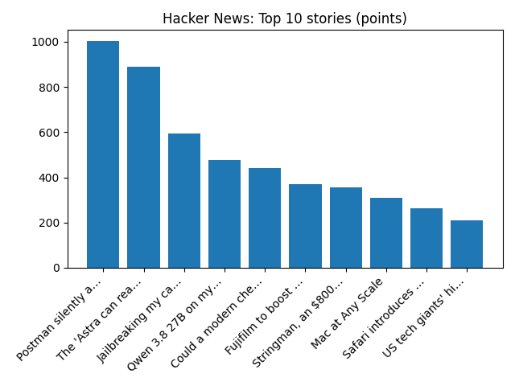

Elon Musk's business empire braces for Democratic wave as Texas flips blue - Reuters
Reuters — Headlines (Google News)
YOUR DAILY INTELLIGENCE BRIEF · 2026-11-04
Global watch: Elon Musk's business empire braces for Democratic wave as Texas flips blue - Reuters, French blood storage impacted by freezer hacks as theories swirl about culprits.
Northern Virginia: LCR Capital Partners Launches Rivana, a New EB-5 Infrastructure Investment Opportunity in Northern Virginia - EIN Presswire, Discover expanded luxury: Indigo at McLean Station announces major Phase II updates and November 14th open house - FFXnow.

Global coverage includes Elon Musk's business empire braces for Democratic wave as Texas flips blue - Reuters; French blood storage impacted by freezer hacks as theories swirl about culprits; Analysis: Trump has defied political consequences for years. The midterms changed that - AP News. Local coverage includes LCR Capital Partners Launches Rivana, a New EB-5 Infrastructure Investment Opportunity in Northern Virginia - EIN Presswire; Discover expanded luxury: Indigo at McLean Station announces major Phase II updates and November 14th open house - FFXnow.

The Lark in the Morning (album)
At the time Liam Clancy, the youngest member of the Clancy Brothers, had not yet joined with his brothers to form the group that would be known as The Clancy Brothers and Tommy Makem, which incorporated itself in 1960. Running time: 48 mins 40secs.
https://en.wikipedia.org/wiki/The_Lark_in_the_Morning_(album)
The Not-So-Hidden Galaxy, IC 342
Runs so far today: 2